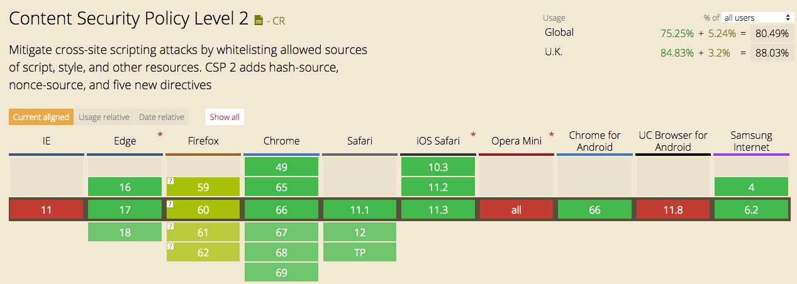

Third-Party Content
The weak link in your chain?
Simon Hearne - Principle Engineer @ Akamai
The modern web workflow 101
make something 🤓
test it ğŸ‘
ship it 😎
...
put tags on it 😳
What I've learned in 5 years
we seem to have less control than ever
& there are increasingly more third-party providers
How I think I can help you
- Understand the risk they pose
- Discover & identify third-party tags
- How to monitor & and measure tags
- Building a business case for tags
Tags serve business goals
- Measurement & Analytics
- Ads & Retargeting
- "Optimization" & Testing
- Comments & Live Chat
- Tag Management
but what about the
Risk?
🎲
Risk 1:
Code Quality 👹
78.7%
of top 500k sites include JS
with known vulnerabilities
CryptoJacking
It happens to the biggest players

Unintentional data collection
website tracking is a "security disaster waiting to happen"
XSS Vulnerabilites

Different release schedules
<script src="//s7.addthis.com/addthis_widget.js" async></script>
How do you know when it changes?
Just plain thoughtless

discuss.newrelic.com/t/do-not-clear-the-resource-timing-buffer/
Code Quality ğŸ”
- How do they protect themselves?
- How do they protect your customers?
Risk 2:
Availability 📉
Availability = User Availability
- Government / ISP interference
- Content blocking (~10% of users*)
- Random issues (1% of JS fails to load*)
Do they fail gracefully?
ğŸ‘
Do they fail gracefully?
Do they fail gracefully?
ğŸ‘
Are they using a CDN?
(& is it as good as yours?)
What is their SLA for availability?
(& is it as good as yours?)

Availability 📉
- What happens when they fail?
- How often could they fail?
Risk 3:
Performance 🚀
Self-policing isn't good enough

status.optimizely.com
Tools aren't equal

orangevalley.nl/en/blog/9-ab-testing-tools-compared-on-site-speed-impact/
Resource Timing is the hero we need

https://www.w3.org/TR/resource-timing-1/
Resource Timing is the hero we need
not without Timing-Allow-Origin 🙈
nicj.net/resourcetiming-visibility-third-party-scripts-ads-and-page-weight/
CPU is our biggest bottleneck ⏳
The most frustrating perf bug, ever
Devices are not affected equally
Fast Fashion… How Missguided revolutionised their approach to site performance
Devices are not affected equally
Fast Fashion… How Missguided revolutionised their approach to site performance
Performance 🚀
- Does their performance affect yours?
- Do they let you measure them?
Actions to take
| Discovery | Impact | Reporting | Code Quality | Availability | Data Leakage | Performance | |
|---|---|---|---|---|---|---|---|
| Removal 🗑 |
Stage 1:
Find out what's there 👁‍🗨
Synthetic Testing
Synthetic Testing (webpagetest)
Conducting an Audit
Identifying, Auditing, and Discussing Third Parties - CSS Wizardry
Real User Monitoring 🥃
Real User Monitoring 🥃
Akamai mPulse
Stage 2:
Determine the impact 📉
Synthetic Testing (webpagetest)
Synthetic Testing (webpagetest)
Synthetic Testing (webpagetest)
Resource Impact from RUM
Advertising Partners
Partner 1 = ~400ms slower than partner 2
Migrating all ads = ~100ms faster page load
Additional revenue ~= $8,000 per month
Large US publishing company
"Everything should have a value,
because everything has a cost"
Tim Kadlec
Stage 3:
Measure them and Report on them 📊
Content Security Policy 👮‍
Content Security Policy 👮‍
(report-only)
{
"csp-report": {
"document-uri": "https://yourwebsite.com/",
"referrer": "",
"violated-directive": "style-src",
"effective-directive": "style-src",
"original-policy": "",
"disposition": "enforce",
"blocked-uri": "inline",
"line-number": 4,
"column-number": 3,
"source-file": "https://static.hotjar.com/c/hotjar-730716.js?sv=6",
"status-code": 0,
"script-sample": ""
}
}
Synthetic Testing 🤖

blog.catchpoint.com/2018/01/10/using-catchpoint-to-analyze-third-party-impact/
RUM 🥃
The
best way to monitor resources,
even with its limitations
🥃 Waterfalls
Akamai mPulse
Actions to take
| Discovery | Impact | Reporting | Code Quality | Availability | Data Leakage | Performance | |
|---|---|---|---|---|---|---|---|
| Removal | |||||||
| Synthetic | |||||||
| RUM | |||||||
| CSP (RO) |
Stage 4:
Defend ourselves 🤼‍
Content Security Policy 👮‍
Content Security Policy 👮‍️
Sub-resource Integrity ğŸ”
Sub-resource Integrity ğŸ”
<link
rel="stylesheet"
href="//maxcdn.bootstrapcdn.com/.../bootstrap.min.css"
integrity="
sha256-8EtRe6XWoFEEhWiaPkLaw...=
sha512-/5KWJw2mvMO2ZM5fndVxU...=
"
crossorigin="anonymous">
<script
src="//ajax.googleapis.com/.../jquery.min.js"
integrity="
sha256-ivk71nXhz9nsyFDoYoGf2...=
sha512-7aMbXH03HUs6zO1R+pLye...=
"
crossorigin="anonymous"></script>
Service Worker 💪
Service Worker 💪
function timeout(delay) {
return new Promise(function(resolve, reject) {
setTimeout(function(){
resolve(new Response('', {
status: 408,
statusText: 'Request timed out.'
}));
}, delay);
});
}
self.addEventListener('fetch', function(event) {
// Only fetch JavaScript files for now
if (/\.js$/.test(event.request.url)) {
event.respondWith(Promise.race([timeout(2000), fetch(event.request.url)]));
} else {
event.respondWith(fetch(event.request));
}
});
calendar.perfplanet.com/2015/reducing-single-point-of-failure-using-service-workers/
Script Manager 💪
Self-hosting / Proxying ☔️
Self-hosting / Proxying ☔️
Self-hosting / Proxying ☔️

Actions to take
| Discovery | Impact | Reporting | Code Quality | Availability | Data Leakage | Performance | |
|---|---|---|---|---|---|---|---|
| Removal | |||||||
| Synthetic | |||||||
| RUM | |||||||
| CSP (RO) | |||||||
| SRI / Versioning | |||||||
| CSP | |||||||
| ServiceWorker | |||||||
| Self Hosting |
Have a third-party policy 💼
- What does it do?
- Who uses it?
- What’s the risk to the site?
- How do you remove it?
Third-party content may be a weak link
But it's here to stay
Five things you can do this week:
- Know what's there (requestmap)
- Measure their performance (WPT / mPulse)
- Share the data (dashboards)
- Have a solid defense (SRI & CSP)
- Have third-party policy (with IT & business)
Further reading
Thank you,
good luck!
🚴†@SimonHearne
🛠webperf.ninja/tools
🖥 shearne@akamai.com
@SimonHearne